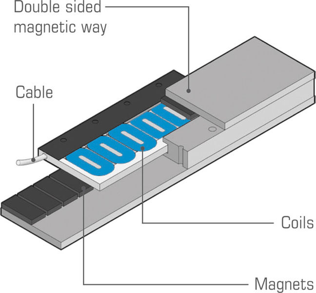
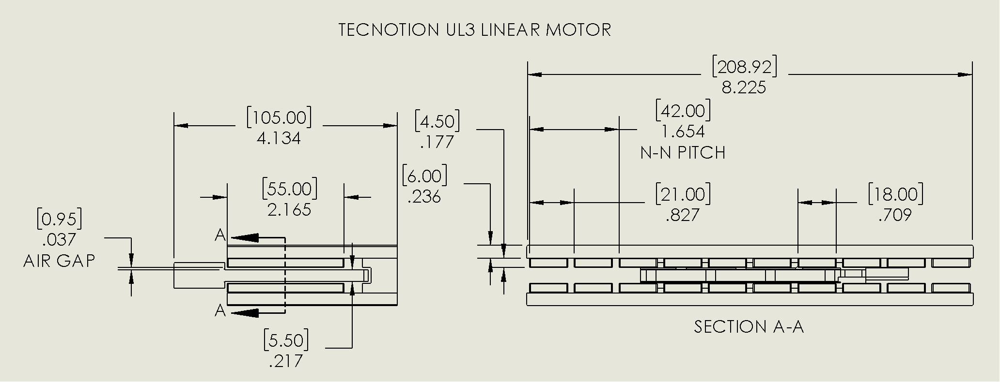
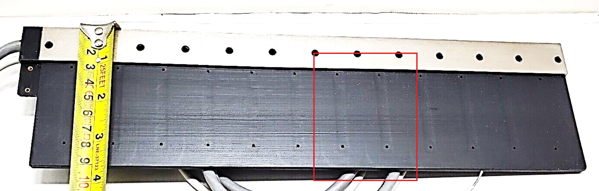
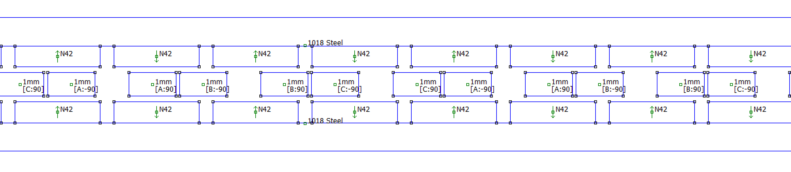
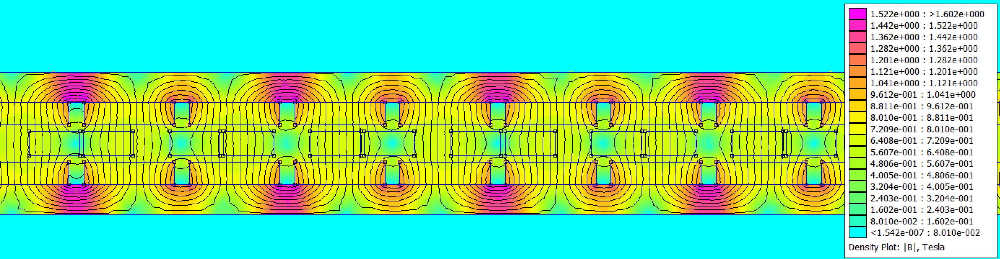
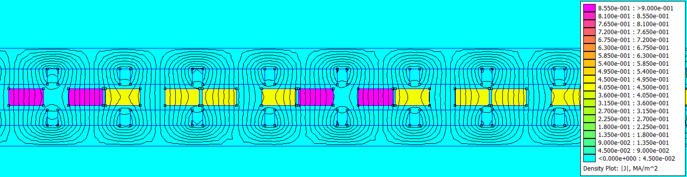
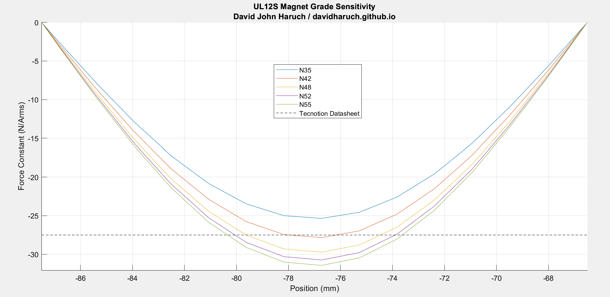

UL12 Ironless Linear Motor Simulation + Rev Engineering
Updated 02-13-2025
Ironless linear motors are commonly used in industry for positioning.
Tecnotion UL12S Coil Teardown
A scrap Tecnotion UL12S model linear motor coil was purchased used (ebay)
Details of the magnet track can be evaluated from the CAD models on the internet. The magnet grade is unknown and will need to be determined with simulation results.
Details of the coil unit are measured by cutting it apart. See the below photos. The coil has high quality, orthocyclic windings and the glue has no voids. Each coil has 90 turns of copper wire. The end-turns have a truncated/radiused square shape instead of a circle---this is a good improvement for footprint and minimizing the copper that produces no force. It is common to maintain a 4:3 ratio for the coil pitch to magnetic pitch (N-S) ratio. As such, the coil pitch measured 21mm*(4/3) = 28mm.



There appears to be a polymer or fiberglass mesh sheet material on top of the coils. Perhaps this is a spacer used in the epoxy ecapsulation process.
Based on the coil dimensions, the phase resistance of each coil is estimated considering orthocyclic winding of 0.72mm round wire with 0.05mm insulation/enamel build. Each coil is expected to have a R25 of 0.624ohm, close to the Tecnotion datasheet. For the configuration of UL12S, there are 4x coils per phase. For each phase based on the datasheet phase resistance, the 4 coils are connected series-parallel, which makes the current in each coil 1/2 the nominal and the phase resistance the same as a single coil. The coils could be connected in a different way to give a higher/lower Kf and better match the amplifier
2D FEM Setup
A 2D finite element model of the motor is created in FEMM. A synchronous current (ipk) of 1A is passed through the windings (, , ). In a "RMS of phase" current description, this is a current of 0.7071A. The coil position is varied to determine the location of peak force. At the location of peak force, the coil field is 90deg offset from the magnet-track field. For purposes of computing the motor constant, the copper loss of a 3 phase wye coil set can be computed as P = Rph*(3/2)*i_pk^2.
  The finite element model post processed data is compared to the vendor specification sheet for multiple magnet grades. N42 agrees well, and is a common grade for motors of moderate performance. Stronger, more expensive magnets could increase performance. Relative to N42, the % increase in Kf is 6.76%, 10.42%, 12.94% for N48, N52, and N55 respectively. Many linear motor vendors offer special stronger magnet track options.
| Parameter | Datasheet Value | N42 FEM Simulation | % Error | Unit |
|---|---|---|---|---|
| Motor Constant @ 25C Coils | 394 | 403.34 | 2.4% | N/√W |
| Force Constant @ 20C Magnets | 27.5 | 27.83 | 1.2% | N/Arms |
Summary
A commercial ironless linear motor is reverse engineered and the datasheet performance is compared with simulation. Good agreement is seen with 2D FEM calculations. Analysis showed a magnet grade of N42 is most likely for the off-the-shelf magnet tracks.
Potential Future Work
- Evaluate the thermal behavior of the motor by FEM (thermal resistance and expansion)
- Evaluate performance improvement with Halbach Magnet Arrays
- Evaluate flat or square coils for ironless LM
- Magnetic shielding for sensitive applications